슬롯 생성이 비활성화됨
프로젝트 패널에서 심볼 에셋을 선택하고 상단 초록색 상태를 확인합니다.
프로젝트 심볼을 선택한 뒤 3단계를 순서대로 완료합니다.
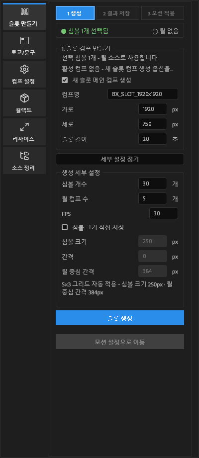
프로젝트 패널에서 슬롯에 사용할 이미지 또는 프리컴프를 선택합니다. 상단 상태가 초록색 심볼 N개 선택됨으로 바뀌는지 확인합니다.
새 메인 컴프 생성 여부, 컴프명, 가로·세로, 슬롯 길이를 설정합니다. 기존 활성 컴프를 사용할 수도 있습니다.
심볼 개수와 릴 컴프 수를 정합니다. 심볼 크기 직접 지정을 끄면 5×3 그리드에 맞는 크기와 중심 간격이 자동 계산됩니다.
파란 슬롯 생성 버튼을 누르면 릴 컴프와 메인 컴프 배치가 함께 만들어집니다.
✓ 1 생성 완료로 바뀌면 다음 단계로 이동할 수 있습니다.세부 설정 펼치기를 누릅니다. 새 슬롯을 다시 만들 때도 1단계에서 설정을 변경할 수 있습니다.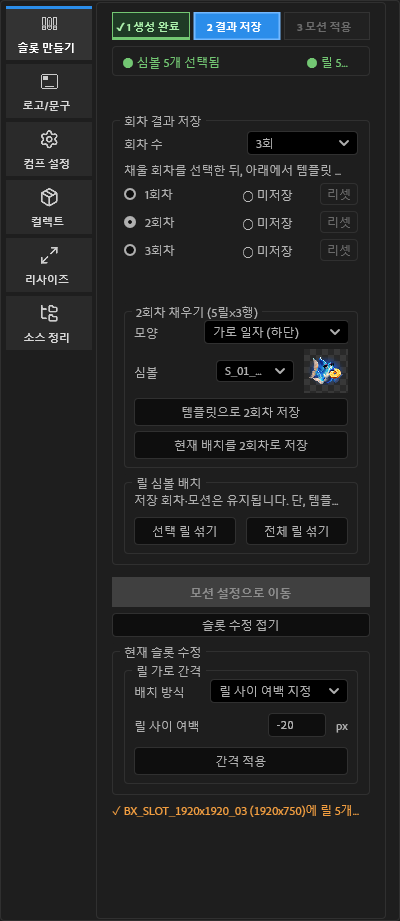
사용할 회차 수를 정하고 1회차부터 선택합니다. 저장된 회차를 클릭하면 별도 보기 버튼 없이 해당 결과가 컴프에 바로 표시됩니다.
템플릿으로 N회차 저장은 모양과 심볼을 기준으로 결과를 자동 구성합니다. 직접 릴 Y 위치를 맞췄다면 현재 배치를 N회차로 저장을 사용합니다.
각 회차마다 다른 모양과 심볼을 지정해 저장합니다. 초록색 저장됨 상태가 필요한 회차 모두에 표시되어야 합니다.
슬롯 수정 펼치기에서 릴 사이 여백을 음수까지 입력해 겹치게 배치할 수 있습니다. 심볼 크기 변경 시 릴 컴프 너비와 높이도 함께 조정됩니다.
선택 릴 섞기 또는 전체 릴 섞기는 릴 심볼 구성을 바꿉니다. 기존 회차 저장값과 모션이 초기화될 수 있으므로 섞은 뒤 회차를 다시 저장하세요.✓ 2 저장 완료로 바뀌면 저장한 결과로 모션을 적용할 수 있습니다.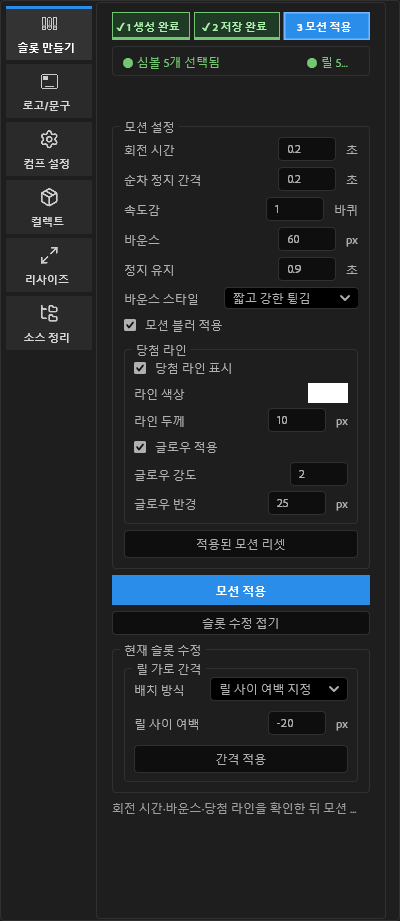
회전 시간, 릴별 순차 정지 간격, 속도감, 바운스, 정지 유지 시간을 설정합니다.
바운스 스타일을 선택하고 모션 블러 적용을 켭니다. 블러는 릴의 회전 방향에 맞춰 적용됩니다.
필요한 경우 당첨 라인, 색상, 두께와 글로우를 설정합니다. 저장한 템플릿 결과를 기준으로 라인이 표시됩니다.
파란 모션 적용 버튼을 누릅니다. 모든 릴에 같은 회전 속도감이 적용되고, 저장한 회차 순서대로 정지합니다.
적용된 모션 리셋을 누른 뒤 값을 변경해 재적용합니다. 메인 컴프 길이를 변경한 경우 릴 컴프와 내부 레이어 길이도 적용 시 함께 동기화됩니다.심볼 선택부터 생성, 회차 결과 저장, 모션 적용까지 실제 작업 흐름을 영상으로 확인할 수 있습니다.
HTML과guide_assets 폴더를 함께 전달해야 다른 컴퓨터에서도 영상이 재생됩니다.선택한 컴프에 로고와 디스클레이머를 같은 기준으로 삽입합니다.
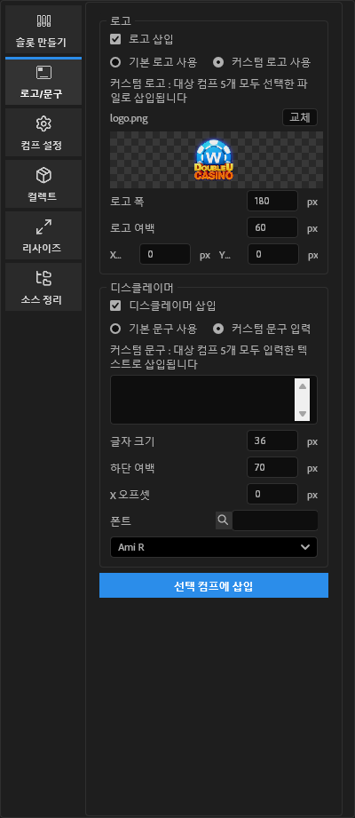
프로젝트 패널에서 적용할 컴프를 하나 이상 선택합니다.
기본 로고 또는 커스텀 로고를 선택하고 폭, 여백, X·Y 오프셋을 설정합니다. 커스텀 로고는 대상 컴프 규격에 맞는 파일을 사용합니다.
기본 문구 또는 커스텀 문구를 선택하고 글자 크기, 하단 여백, X 오프셋과 폰트를 지정합니다.
파란 버튼을 눌러 선택한 모든 컴프에 적용합니다. 로고 또는 문구만 사용할 때는 필요 없는 항목의 체크를 끕니다.
선택한 여러 컴프의 규격을 한 번에 변경합니다.
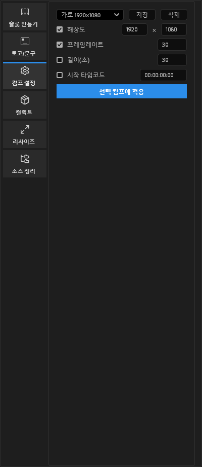
프로젝트 패널에서 규격을 변경할 컴프를 선택합니다.
저장된 프리셋을 선택하거나 해상도, 프레임레이트, 길이, 시작 타임코드를 직접 입력합니다.
실제로 바꿀 항목만 체크합니다. 체크하지 않은 속성은 기존 값이 유지됩니다.
파란 버튼을 눌러 적용합니다. 자주 사용하는 조합은 상단 저장으로 프리셋에 추가할 수 있습니다.
00:00:00:00 형식으로 입력합니다.선택한 최종 컴프와 연결된 소스를 전달용 폴더로 모읍니다.
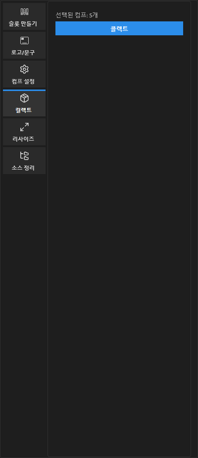
콜렉트 전 현재 AEP를 저장합니다. 저장되지 않은 프로젝트에서는 실행할 수 없습니다.
프로젝트 패널에서 전달할 컴프를 선택하고 패널의 선택된 컴프 개수를 확인합니다.
파란 콜렉트 버튼을 누르고 확인창에서 계속합니다. AE 기본 콜렉트 창에서 최종 저장 경로를 한 번 선택합니다.
선택 콘텐츠의 실제 영역에 맞춰 컴프 크기와 위치를 조정합니다.
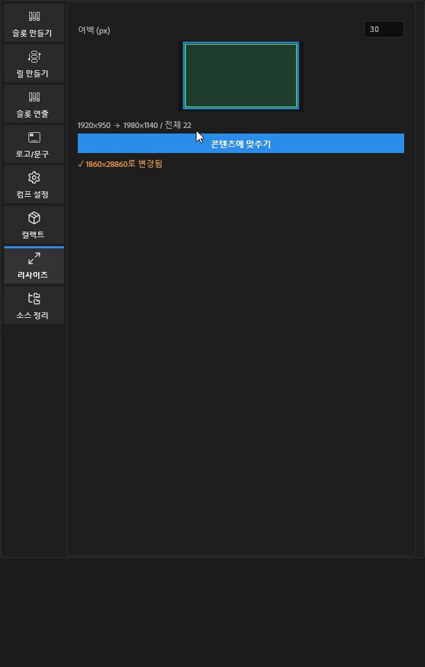
레이어를 선택하면 선택 콘텐츠만 측정합니다. 선택이 없으면 활성 컴프의 전체 콘텐츠를 기준으로 합니다.
여백을 입력하고 패널 미리보기에서 현재 영역과 변경될 컴프 크기를 확인합니다.
파란 버튼을 누르면 컴프 크기가 변경되고 콘텐츠가 새 컴프의 중앙으로 이동합니다. 키프레임과 부모 관계가 있는 레이어의 위치도 함께 보정됩니다.
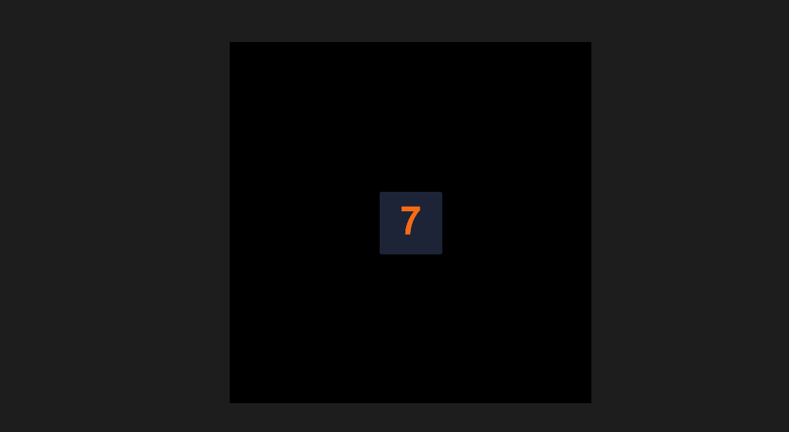
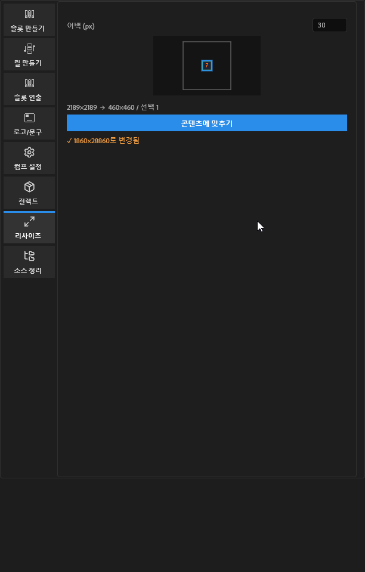
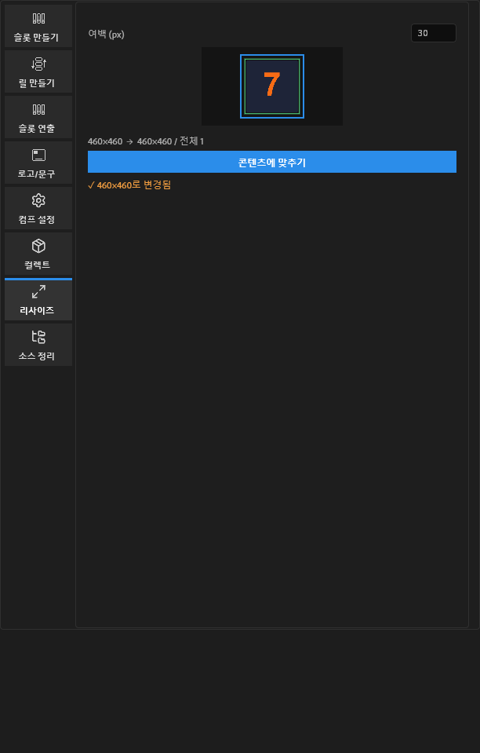
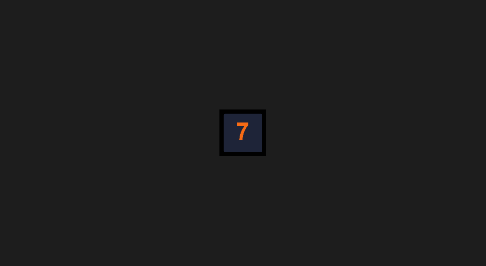
프로젝트 패널의 컴프와 소스를 표준 폴더로 분류합니다.
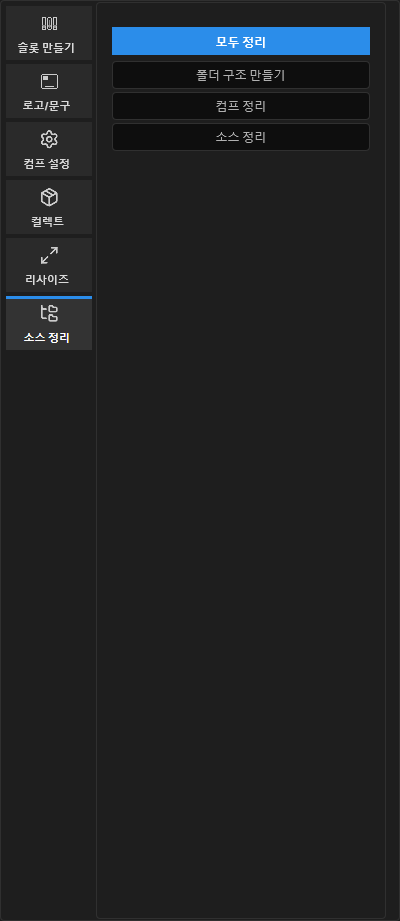
폴더 구조 생성 · 컴프 분류 · 소스 분류 일괄 실행
폴더 구조 만들기 · 컴프 정리 · 소스 정리 선택 실행
DUC_날짜... 형식 컴프 이동Layers 폴더fc footage 폴더 · 기타 파일작업자가 자주 확인해야 하는 항목입니다.
프로젝트 패널에서 심볼 에셋을 선택하고 상단 초록색 상태를 확인합니다.
설정한 회차 수만큼 모든 회차가 저장됨인지 확인합니다.
해당 회차를 선택해 저장 결과를 확인합니다. 릴을 섞은 뒤라면 회차를 리셋하고 다시 저장합니다.
적용된 모션 리셋을 실행한 뒤 타이밍 값을 변경해 재적용합니다.
프로젝트를 저장하고 프로젝트 패널에서 최종 컴프를 선택합니다.
패널을 닫고 After Effects를 재시작합니다.